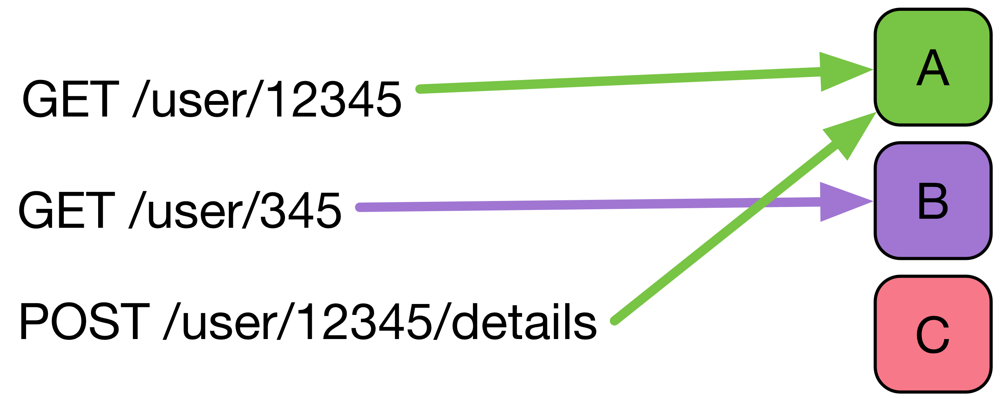
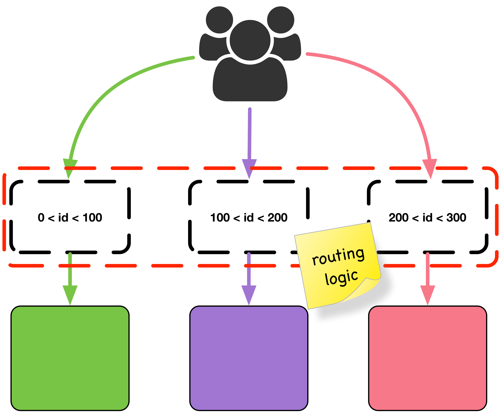

Round-Robin Load Balancing

Round-Robin Load Balancing

Any local caching is unfeasible
as the load is shared
Application-Level Sharding
How do we assign users to servers?
What if the topology changes?
Failure detection
by heartbeat
..or is it?

DEMO
https://youtu.be/fLDOCwiKbboSecret Sauce(s)


- Scalable
- Weakly-Consistent
- Infection Style
- Membership protocol
Let's organize our peers in a consistent hashring, using SWIM to detect failures

API
Starting upring
const upring = UpRing({
base: ['127.0.0.1:7979'],
logLevel: 'debug',
hashring: {
replicaPoints: 10,
joinTimeout: 200
}
})
Adding patterns
upring.add('ns:kv,cmd:put', function (req, reply) {
db.set(req.key, req.value)
/* the first argument is the error
the second one is the result */
reply(null, { ok: true })
})
Send requests
upring.request({
ns: 'kv',
cmd: 'get',
key: 'hello'
}, console.log)
Do live updates 1/2
upring.add('ns:kv,cmd:live', function (req, reply) {
const updates = new Readable({
objectMode: true,
read: () => {}
})
// call push whenever you want to send data
// se the full Readable API at nodejs.org
updates.push({ hello: 'world' })
reply(null, { streams: { updates } })
})
Do live updates 2/2
upring.request({
ns: 'kv',
cmd: 'get',
key: 'hello'
}, function (err, res) {
res.streams.updates.on('data', console.log)
})
Track
/* call upring.track(key) if you are responsible
for that key, i.e. if upring.allocatedToMe(key)
returns true */
const tracker = upring.track(key, { replica: true })
tracker.on('replica', function (peer) {
console.log('new replica', peer)
})
tracker.on('move', function (peer) {
console.log('moved to', peer)
})
Replica
/* call upring.replica(key, cb) if you are not responsible
for that key, i.e. if upring.allocatedToMe(key)
returns false */
upring.replica(key, function () {
// now upring.allocateToMe(key) returns true
})
Upring is a framework to build
- a key value store
- a cache
- a pub/sub system
- real-time applications
- a discovery system
- a metadata store for microservices
- ..or anything that requires distributed state!
Links
This presentation
http://github.com/mcollina
Thanks!

matteo.collina@nearform.com
@matteocollina
www.nearform.com
How does it work?
Transport: tentacoli
- https://github.com/mcollina/tentacoli
- request/response for messages
- support sending binary streams
- support sending object streams
- works on top any binary stream
var stream = net.connect(4200)
var instance = tentacoli()
stream.pipe(instance).pipe(stream)
instance.request({
cmd: 'somedata'
}, function (err, res) {
console.log(err, res)
})
var server = net.createServer(function (stream) {
var instance = tentacoli()
stream.pipe(instance).pipe(stream)
stream.on('request', handle)
})
server.listen(4200)
function handle (req, reply) {
console.log('--> request is', req.cmd)
reply(null, {
data: 'some data'
})
}
Streams are a first level concern
We can use them to receive live updates
instance.request({
cmd: 'a request',
}, function (err, res) {
res.streams.on('data', console.log)
}
instance.request({
cmd: 'upload',
streams: {
file: fs.createReadStream(__filename)
}
}, console.log)
Streams can also be in replies
function handle (req, reply) {
console.log('--> request is', req.cmd)
reply(null, {
streams: {
file: fs.createReadStream(__filename)
}
})
}

Pattern Matching!
var i = bloomrun()
i.add({ cmd: 'save' }, function save (arg, cb) {
alert('saving ' + JSON.stringify(arg))
cb(null, true) })
var msg = {
cmd: 'save',
person: { name: 'matteo' } }
i.lookup(msg)(msg, function (err, result) {
alert([err, result].join(' ')) })
Thanks!